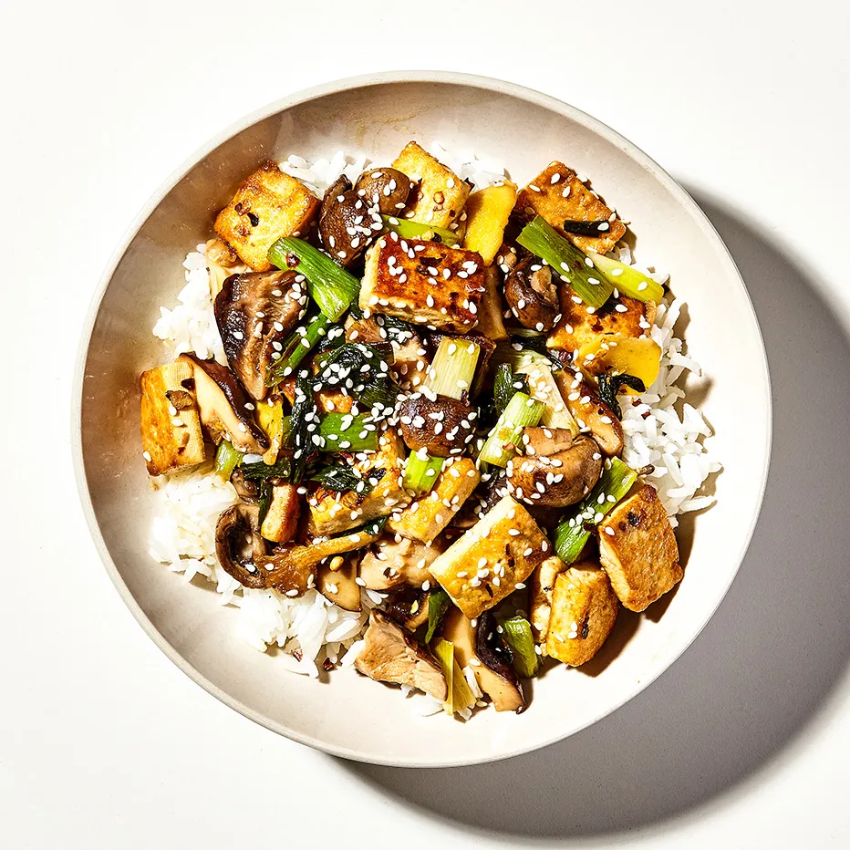

Tofu Mushroom Stir-Fry

Ingredients:
- 1 Block of Tofu cut into bite sized pieces
- 1 cup of sliced Mushrooms
- 1-2 sprigs Green Onions cut into 1/2 inch pieces
- 8 table spoons of soy sauce
- 4 table spoons of mirin
- 4 cloves of garlic, Minced
- cornstarch slurry (optional)
- 2 table spoons olive oil
- 2 table spoons of butter
- salt to taste
- 1 cup uncooked white rice
Steps:
- marinate the Tofu in 4 table spoons of soy sauce
- mix 4 table spoons of soy sauce with 4 table spoons of mirin and add the garlic
- combine rice salt and butter to a pan heat till it boils
- once rice comes to a boil cover tightly reduce heat and simmer for 10 min
- after 10 minutes turn off heat and leave rice covered for another 5 minutes
- heat 2 table spoons olive oil in a pan
- add Mushrooms and green onions
- add salt and cook down the mushroom mixture
- after mushrooms are cooked remove the mixture from the pan set aside in a bowl
- heat another 2 table spoons of olive oil in the same pan
- add the tofu to the pan, reserve the marinading liquid
- cook the tofu tossing in the pan
- add the marinade liquid to the pan let cook out
- once the liquid has almost all cooked out add the sauce mixture made in step 2
- let the sauce cook down and thicken if not thick enough add the cornstarch slurry
- add the mushroom mixture back to the pan and toss everything together
- serve over cooked rice